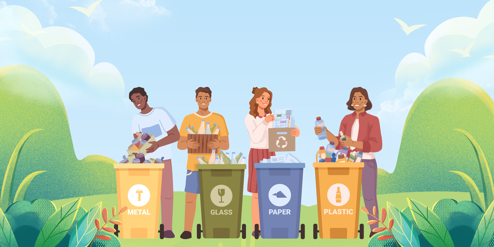
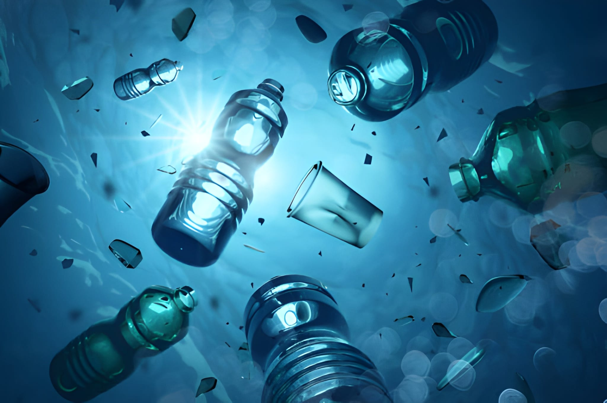
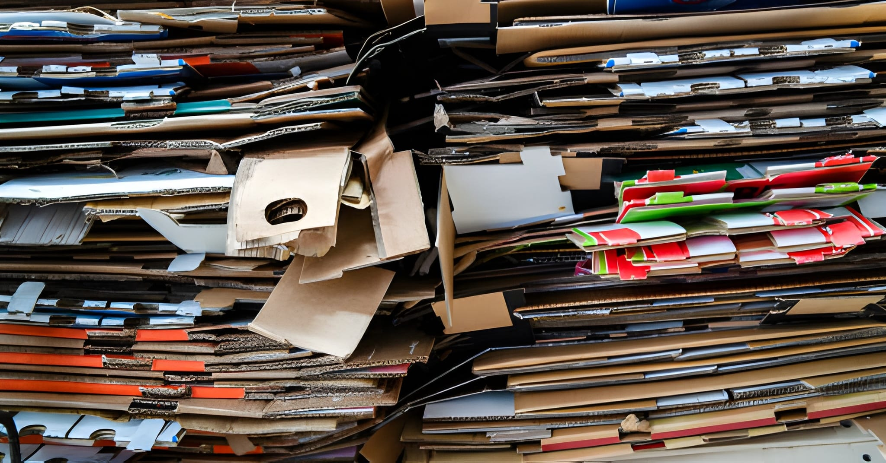

Penulis
Tim Redaksi DRYcycle
21 Oktober 2025 • 2 menit baca
Jakarta - Platform bank sampah digital asal Indonesia, DRYcycle, berhasil meraih penghargaan bergengsi dalam ajang Green Innovation Award 2025 yang diselenggarakan di Singapore. Penghargaan ini diberikan kepada inovasi teknologi yang memberikan dampak signifikan terhadap pelestarian lingkungan.
DRYcycle mengalahkan 250 peserta dari 45 negara dengan konsep bank sampah digital yang mengintegrasikan teknologi Internet of Things (IoT), Artificial Intelligence (AI), dan Blockchain untuk menciptakan ekosistem pengelolaan sampah yang transparan dan efisien.
DRYcycle menunjukkan bagaimana teknologi dapat menjadi solusi nyata untuk masalah lingkungan. Sistemnya yang inovatif dan mudah digunakan menjadi model yang patut ditiru oleh negara lain.

Platform DRYcycle menawarkan berbagai fitur inovatif yang membedakannya dari sistem bank sampah konvensional. Pengguna dapat dengan mudah menemukan lokasi bank sampah terdekat, mendapatkan panduan pemilahan sampah yang tepat melalui AI, dan melacak kontribusi mereka secara real-time.
Sejak diluncurkan pada awal 2024, DRYcycle telah mencatat pertumbuhan yang impresif. Platform ini kini memiliki lebih dari 500.000 pengguna aktif dan bermitra dengan 2.500 bank sampah di seluruh Indonesia.
Dengan momentum penghargaan internasional ini, DRYcycle berencana untuk melakukan ekspansi ke negara-negara Asia Tenggara lainnya seperti Thailand, Vietnam, dan Filipina pada tahun 2026. Tim juga sedang dalam diskusi dengan beberapa investor global untuk pengembangan fitur-fitur baru.
Penghargaan ini adalah bukti bahwa Indonesia mampu berinovasi di tingkat global. Kami berkomitmen untuk terus mengembangkan teknologi yang memberikan dampak positif bagi lingkungan dan masyarakat.
Prestasi DRYcycle di kancah internasional membuktikan bahwa inovasi lokal Indonesia mampu bersaing secara global. Penghargaan ini diharapkan dapat menginspirasi lebih banyak startup teknologi untuk fokus pada solusi yang berkelanjutan dan berdampak positif bagi lingkungan.
Pemerintah meluncurkan program ambisius untuk masa depan...

Tips & Trik
5 Cara Mudah Mengurangi Sampah Plastik di Rumah

Daur Ulang
Kreasi Unik dari Barang Bekas yang Menghasilkan Cuan